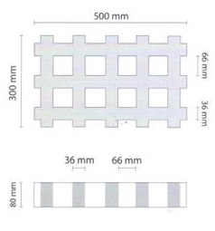

Nos encontras en 14 E/ 508 y vías, Gonnet, La Plata, Buenos Aires


Desarrollado por MCPA
Las grillas son un complemento ideal para los parques y espacios verdes. Son una estructura de hormigón vibro prensado con forma de cuadrícula, cuyos orificios permiten el paso del césped. Es ideal para ingresos a cocheras, para cubrir senderos formados naturalmente y caminos de ingreso.Produce el agradable efecto visual del verde y a la vez brinda una excelente firmeza al terreno y mejora la transitabilidad. Es de muy fácil aplicación y permite el tránsito inmediato.
| Medidas | Peso | |
|---|---|---|
| Tradicionales | 31,5 x 52,5 x 8 cm de alto | 16,5 kg |
| Reforzadas | 33 x 50 x 10 cm de alto | 19 kg |
Las losas huecas de hormigón pretensado son elementos premoldeados fabricados por extrusión. Aptas para la construcción de todo tipo de techos y entrepisos, horizontales o inclinados, no requieren capa de compresión ni apuntalamiento. SHAP 30, SHAP 60, SHAP 120.
Pisos industriales para superficies de gran desgaste y difícil de mantenimiento. Existen distintas opciones como hormigón fibrado – rampas. Carpetas sobre losas. Endurecedores metálicos y no metálicos en colores. Aserrado de juntas.
Los bloques SHAPBLOCK se fabrican con el mejor hormigón. Sus dimensiones modulares y la variedad de formas y tamaños facilitan el diseño y la construcción. Aprovechando sus huecos, evita la rotura posterior del muro para el paso de cañerías de agua, luz, gas.
Nos encontras en 14 E/ 508 y vías, Gonnet, La Plata, Buenos Aires
Desarrollado por MCPA